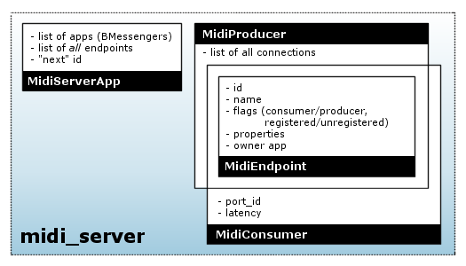
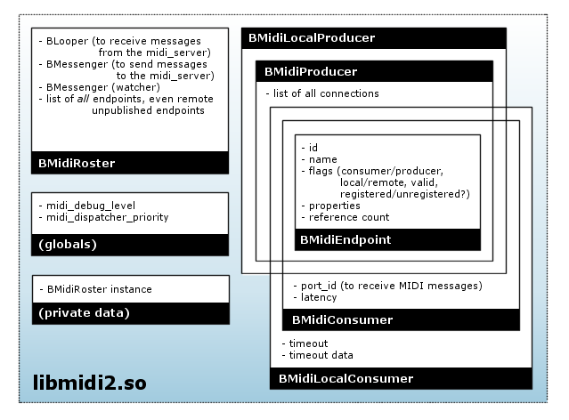

Midi Kit design¶
The Midi Kit consists of the midi_server and two shared libraries, libmidi2.so and libmidi.so. The latter is the “old” pre-R5 Midi Kit and has been re-implemented using the facilities from libmidi2, which makes it fully compatible with the new kit. This document describes the design and implementation of the OpenBeOS midi_server and libmidi2.so.
The midi_server has two jobs: it keeps track of the endpoints that the client apps have created, and it publishes endpoints for the devices from /dev/midi. (This last task could have been done by any other app, but it was just as convenient to make the midi_server do that.) The libmidi2.so library also has two jobs: it assists the midi_server with the housekeeping stuff, and it allows endpoints to send and receive MIDI events. (That’s right, the midi_server has nothing to do with the actual MIDI data.)
Ooh, pictures¶
The following image shows the center of Midi Kit activity, the midi_server, and its data structures:

And here is the picture for libmidi2.so:

Note that these diagrams give only a conceptual overview of who is responsible for which bits of data. The actual implementation details of the kit may differ.
Housekeeping¶
- The design for our implementation of the midi2 “housekeeping” protocol roughly follows what Be did, although there are some differences. In Be’s implementation, the BMidiRosters only have BMidiEndpoints for remote endpoints if they are registered. In our implementation, the BMidiRosters have BMidiEndpoint objects for all endpoints, including remote endpoints that aren’t published at all. If there are many unpublished endpoints in the system, our approach is less optimal. However, it made the implementation of the Midi Kit much easier ;-)
- Be’s libmidi2.so exports the symbols “midi_debug_level” and “midi_dispatcher_priority”, both int32’s. Our libmidi2 does not use either of these. But even though these symbols are not present in the headers, some apps may use them nonetheless. That’s why our libmidi2 exports those symbols as well.
- The name of the message fields in Be’s implementation of the protocol had the “be:” prefix. Our fields have a “midi:” prefix instead. Except for the fields in the B_MIDI_EVENT notification messages, because that would break compatibility with existing apps.
Initialization¶
- The first time an app uses a midi2 class, the BMidiRoster::MidiRoster() method sends an ‘Mapp’ message to the midi_server, and blocks (on a semaphore). This message includes a messenger to the app’s BMidiRosterLooper object. The server adds the app to its list of registered apps. Then the server asynchronously sends back a series of ‘mNEW’ message notifications for all endpoints on the roster, and ‘mCON’ messages for all existing connections. The BMidiRosterLooper creates BMidiEndpoint objects for these endpoints and adds them to its local roster; if the app is watching, it also sends out corresponding B_MIDI_EVENT notifications. Finally, the midi_server sends an ‘mAPP’ message to notify the app that it has been successfully registered. Upon receipt, BMidiRoster::MidiRoster() unblocks and returns control to the client code. This handshake is the only asynchronous message exchange; all the other requests have a synchronous reply.
- If the server detects an error during any of this (incorrect message format, delivery failure, etc.) it simply ignores the request and does not try to send anything back to the client (which is most likely impossible anyway). If the app detects an error (server sends back meaningless info, cannot connect to server), it pretends that everything is hunkey dorey. (The API has no way of letting the client know that the initialization succeeded.) Next time the app tries something, the server either still does not respond, or it ignores the request (because this app isn’t properly registered). However, if the app does not receive the ‘mAPP’ message, it will not unblock, and remains frozen for all eternity.
- BMidiRoster’s MidiRoster() method creates the one and only BMidiRoster instance on the heap the first time it is called. This instance is automatically destroyed when the app quits.
Error handling¶
- If some error occurs, then the reply message is only guaranteed to contain the “midi:result” field with some non- zero error code. libmidi2 can only assume that the reply contains other data on success (i.e. when “midi:result” is B_OK).
- The timeout for delivering and responding to a message is about 2 seconds. If the client receives no reply within that time, it assumes the request failed. If the server cannot deliver a message within 2 seconds, it assumes the client is dead and removes it (and its endpoints) from the roster. Of course, these assumptions may be false. If the client wasn’t dead and tries to send another request to the server, then the server will now ignore it, since the client app is no longer registered.
- Because we work with timeouts, we must be careful to avoid misunderstandings between the midi_server and the client app. Both sides must recognize the timeout, so they both can ignore the operation. If, however, the server thinks that everything went okay, but the client flags an error, then the server and the client will have two different ideas of the current state of the roster. Of course, those situations must be avoided.
- Although apps register themselves with the midi_server, there is no corresponding “unregister” message. The only way the server recognizes that an app and its endpoints are no longer available is when it fails to deliver a message to that app. In that case, we remove the app and all its endpoints from the roster. To do this, the server sends “purge endpoint” messages to itself for all of the app’s endpoints. This means we don’t immediately throw the app away, but we schedule that for some time in the future. That makes the whole event handling mechanism much cleaner. There is no reply to the purge request. (Actually, we do immediately throw away the app_t object, since that doesn’t really interfere with anything.) (If there are other events pending in the queue which also cause notifications, then the server may send multiple purge messages for the same endpoints. That’s no biggie, because a purge message will be ignored if its endpoint no longer exists.)
- As mentioned above, the midi_server ignores messages that do not come from a registered app, although it does send back an error reply. In the case of the “purge endpoint” message, the server makes sure the message was local (i.e. sent by the midi_server itself).
- Note: BMessage’s SendReply() apparently succeeds even if you kill the app that the reply is intended for. This is rather strange, and it means that you can’t test delivery error handling for replies by killing the app. (You can kill the app for testing the error handling on notifications, however.)
Creating and deleting endpoints¶
- When client code creates a new BMidiLocalProducer or BMidiLocalConsumer endpoint, we send an ‘Mnew’ message to the server. Unlike Be’s implementation, the “name” field is always present, even if the name is empty. After adding the endpoint to the roster, the server sends ‘mNEW’ notifications to all other applications. Upon receipt of this notification, the BMidiRosterLoopers of these apps create a new BMidiEndpoint for the endpoint and add it to their internal list of endpoints. The app that made the request receives a reply with a single “midi:result” field.
- When you “new” an endpoint, its refcount is 1, even if the creation failed. (For example, if the midi_server does not run.) When you Acquire(), the refcount is bumped. When you Release(), it is decremented. When refcount drops to 0, the endpoint object “deletes” itself. (So client code should never use an endpoint after having Release()’d it, because the object may have just been killed.) When creation succeeds, IsValid() returns true and ID() returns a valid ID (> 0). Upon failure, IsValid() is false and ID() returns 0.
- After the last Release() of a local endpoint, we send ‘Mdel’ to let the midi_server know the endpoint is now deleted. We don’t expect a reply back. If something goes wrong, the endpoint is deleted regardless. We do not send separate “unregistered” notifications, because deleting an endpoint implies that it is removed from the roster. For the same reason, we also don’t send separate “disconnected” notifications.
- The ‘mDEL’ notification triggers a BMidiRosterLooper to remove the corresponding BMidiEndpoint from its internal list. This object is always a proxy for a remote endpoint. The remote endpoint is gone, but whether we can also delete the proxy depends on its reference count. If no one is still using the object, its refcount is zero, and we can safely delete the object. Otherwise, we must defer destruction until the client Release()’s the object.
- If you “delete” an endpoint, your app drops into the debugger.
- If you Release() an endpoint too many times, your app could drop into the debugger. It might also crash, because you are now using a dead object. It depends on whether the memory that was previously occupied by your endpoint object was overwritten in the mean time.
- You are allowed to pass NULL into the constructors of BMidiLocalConsumer and BMidiLocalProducer, in which case the endpoint’s name is simply an empty string.
Changing endpoint attributes¶
- An endpoint can be “invalid”. In the case of a proxy this means that the remote endpoint is unregistered or even deleted. Local endpoints can only be invalid if something went wrong during their creation (no connection to server, for example). You can get the attributes of invalid objects, but you cannot set them. Any attempts to do so will return an error code.
- For changing the name, latency, or properties of an endpoint, libmidi2 sends an ‘Mchg’ message with the fields that should be changed, “midi:name”, “midi:latency”, or “midi:properties”. Registering or unregistering an endpoint also sends such an ‘Mchg’ message, because we consider the “registered” state also an attribute, in “midi:registered”. The message obviously also includes the ID of the endpoint in question. Properties are sent using a different message, because the properties are not stored inside the BMidiEndpoints.
- After handling the ‘Mchg’ request, the midi_server broadcasts an ‘mCHG’ notification to all the other apps. This message has the same contents as the original request.
- If the ‘Mchg’ message contains an invalid “midi:id” (i.e. no such endpoint exists or it does not belong to the app that sent the request), the midi_server returns an error code, and it does not notify the other apps.
- If you try to Register() an endpoint that is already registered, libmidi2 does not send a message to the midi_server but simply returns B_OK. (Be’s implementation did send a message, but our libmidi2 also keeps track whether an endpoint is registered or not.) Although registering an endpoint more than once doesn’t make much sense, it is not considered an error. Likewise for Unregister()ing an endpoint that is not registered.
- If you try to Register() or Unregister() a remote endpoint, libmidi2 immediately returns an error code, and does not send a message to the server. Likewise for a local endpoints that are invalid (i.e. whose IsValid() function returns false).
- BMidiRoster::Register() and Unregister() do the same thing as BMidiEndpoint::Register() and Unregister(). If you pass NULL into these functions, they return B_BAD_VALUE.
- SetName() ignores NULL names. When you call it on a remote endpoint, SetName() does nothing. SetName() does not send a message if the new name is the same as the current name.
- SetLatency() ignores negative values. SetLatency() does not send a message if the new latency is the same as the current latency. (Since SetLatency() lives in BMidiLocalConsumer, you can never use it on remote endpoints.)
- We store a copy of the endpoint properties in each BMidiEndpoint. The properties of new endpoints are empty. GetProperties() copies this BMessage into the client’s BMessage. GetProperties() returns NULL if the message parameter is NULL.
- SetProperties() returns NULL if the message parameter is NULL. It returns an error code if the endpoint is remote or invalid. SetProperties() does not compare the contents of the new BMessage to the old, so it will always send out the change request.
Connections¶
- BMidiProducer::Connect() sends an ‘Mcon’ request to the midi_server. This request contains the IDs of the producer and the consumer you want to connect. The server sends back a reply with a result code. If it is possible to make this connection, the server broadcasts an ‘mCON’ notification to all other apps. In one of these apps the producer is local, so that app’s libmidi2 calls the BMidiLocalProducer::Connected() hook.
- You are not allowed to connect the same producer and consumer more than once. The midi_server checks for this. It also returns an error code if you try to disconnect two endpoints that were not connected.
- Disconnect() sends an ‘Mdis’ request to the server, which contains the IDs of the producer and consumer that you want to disconnect. The server replies with a result code. If the connection could be broken, it also sends an ‘mDIS’ notification to the other apps. libmidi2 calls the local producer’s BMidiLocalProducer::Disconnected() hook.
- Connect() and Disconnect() immediately return an error code if you pass a NULL argument, or if the producer or consumer is invalid.
- When you Release() a local consumer that is connected, all apps will go through their producers, and throw away this consumer from their connection lists. If one of these producers is local, we call its Disconnected() hook. If you release a local producer, this is not necessary.
Watching¶
- When you call StartWatching(), the BMidiRosterLooper remembers the BMessenger, and sends it B_MIDI_EVENT notifications for all registered remote endpoints, and the current connections between them. It does not let you know about local endpoints. When you call StartWatching() a second time with the same BMessenger, you’ll receive the whole bunch of notifications again. StartWatching(NULL) is not allowed, and will be ignored (so it is not the same as StopWatching()).
Thread safety¶
- Within libmidi2 there are several possible race conditions, because we are dealing with two threads: the one from BMidiRosterLooper and a thread from the client app, most likely the BApplication’s main thread. Both can access the same data: BMidiEndpoint objects. To synchronize these threads, we lock the BMidiRosterLooper, which is a normal BLooper. Anything happening in BMidiRosterLooper’s message handlers is safe, because BLoopers are automatically locked when handling a message. Any other operations (which run from a different thread) must first lock the looper if they access the list of endpoints or certain BMidiEndpoint attributes (name, properties, etc).
- What if you obtain a BMidiEndpoint object from FindEndpoint() and at the same time the BMidiRosterLooper receives an ‘mDEL’ request to delete that endpoint? FindEndpoint() locks the looper, and bumps the endpoint object before giving it to you. Now the looper sees that the endpoint’s refcount is larger than 0, so it won’t delete it (although it will remove the endpoint from its internal list). What if you Acquire() or Release() a remote endpoint while it is being deleted by the looper? That also won’t happen, because if you have a pointer to that endpoint, its refcount is at least 1 and the looper won’t delete it.
- It is not safe to use a BMidiEndpoint and/or the BMidiRoster from more than one client thread at a time; if you want to do that, you should synchronize access to these objects yourself. The only exception is the Spray() functions from BMidiLocalProducer, since most producers have a separate thread to spray their MIDI events. This is fine, as long as that thread isn’t used for anything else, and it is the only one that does the spraying.
- BMidiProducer objects keep a list of consumers they are connected to. This list can be accessed by several threads at a time: the client’s thread, the BMidiRosterLooper thread, and possibly a separate thread that is spraying MIDI events. We could have locked the producer using BMidiRosterLooper’s lock, but that would freeze everything else while the producer is spraying events. Conversely, it would freeze all producers while the looper is talking to the midi_server. To lock with a finer granularity, each BMidiProducer has its own BLocker, which is used only to lock the list of connected consumers.
Misc remarks¶
- BMidiEndpoint keeps track of its local/remote state with an “isLocal” variable, and whether it is a producer/consumer with “isConsumer”. It also has an “isRegistered” field to remember whether this endpoint is registered or not. Why not lump all these different states together into one “flags” bitmask? The reason is that isLocal only makes sense to this application, not to others. Also, the values of isLocal and isConsumer never change, but isRegistered does. It made more sense (and clearer code) to separate them out. Finally, isRegistered does not need to be protected by a lock, even though it can be accessed by multiple threads at a time. Reading and writing a bool is atomic, so this can’t get messed up.
The messages¶
Message: Mapp (MSG_REGISTER_APP) BMessenger midi:messenger Reply: (no reply) Message: mAPP (MSG_APP_REGISTERED) (no fields) Message: Mnew (MSG_CREATE_ENDPOINT) bool midi:consumer bool midi:registered char[] midi:name BMessage midi:properties int32 midi:port (consumer only) int64 midi:latency (consumer only) Reply: int32 midi:result int32 midi:id Message: mNEW (MSG_ENPOINT_CREATED) int32 midi:id bool midi:consumer bool midi:registered char[] midi:name BMessage midi:properties int32 midi:port (consumer only) int64 midi:latency (consumer only) Message: Mdel (MSG_DELETE_ENDPOINT) int32 midi:id Reply: (no reply) Message: Mdie (MSG_PURGE_ENDPOINT) int32 midi:id Reply: (no reply) Message: mDEL (MSG_ENDPOINT_DELETED) int32 midi:id Message: Mchg (MSG_CHANGE_ENDPOINT) int32 midi:id int32 midi:registered (optional) char[] midi:name (optional) int64 midi:latency (optional) BMessage midi:properties (optional) Reply: int32 midi:result Message: mCHG (MSG_ENDPOINT_CHANGED) int32 midi:id int32 midi:registered (optional) char[] midi:name (optional) int64 midi:latency (optional) BMessage midi:properties (optional)
MIDI events¶
MIDI events are always sent from a BMidiLocalProducer to a BMidiLocalConsumer. Proxy endpoint objects have nothing to do with this. During its construction, the local consumer creates a kernel port. The ID of this port is published, so everyone knows what it is. When a producer sprays an event, it creates a message that it sends to the ports of all connected consumers.
This means that the Midi Kit considers MIDI messages as discrete events. Hardware drivers chop the stream of incoming MIDI data into separate events that they send out to one or more kernel ports. Consumers never have to worry about parsing a stream of MIDI data, just about handling a bunch of separate events.
Each BMidiLocalConsumer has a (realtime priority) thread associated with it that waits for data to arrive at the port. As soon as a new MIDI message comes in, the thread examines it and feeds it to the Data() hook. The Data() hook ignores the message if the “atomic” flag is false, or passes it on to one of the other hook functions otherwise. Incoming messages are also ignored if their contents are not valid; for example, if they have too few or too many bytes for a certain type of MIDI event.
Unlike the consumer, BMidiLocalProducer has no thread of its own. As a result, spraying MIDI events always happens in the thread of the caller. Because the consumer port’s queue is only 1 message deep, spray functions will block if the consumer thread is already busy handling another MIDI event. (For this reason, the Midi Kit does not support interleaving of real time messages with lower priority messages such as sysex dumps, except at the driver level.)
The producer does not just send MIDI event data to the consumer, it also sends a 20-byte header describing the event. The total message looks like this:
4 bytes ID of the producer 4 bytes ID of the consumer 8 bytes performance time 1 byte atomic (1 = true, 0 = false) 3 bytes padding (0) x bytes MIDI event data In the case of a sysex event, the SystemExclusive() hook is only called if the first byte of the message is 0xF0. The sysex end marker (0xF7) is optional; only if the last byte is 0xF7 we strip it off. This is unlike Be’s implementation, which all always strips the last byte even when it is not 0xF7. According to the MIDI spec, 0xF7 is not really required; any non-realtime status byte ends a sysex message.
SprayTempoChange() sends 0xFF5103tttttt, where tttttt is 60,000,000/bpm. This feature is not really part of the MIDI spec, but an extension from the SMF (Standard MIDI File) format. Of course, the TempoChange() hook is called in response to this message.
The MIDI spec allows for a number of shortcuts. A Note On event with velocity 0 is supposed to be interpreted as a Note Off, for example. The Midi Kit does not concern itself with these shortcuts. In this case, it still calls the NoteOn() hook with a velocity parameter of 0.
The purpose of BMidiLocalConsumer’s AllNotesOff() function is not entirely clear. All Notes Off is a so-called “channel mode message” and is generated by doing a SprayControlChange(channel, B_ALL_NOTES_OFF, 0). BMidi has an AllNotesOff() function that sends an All Notes Off event to all channels, and possible Note Off events to all keys on all channels as well. I suspect someone at Be was confused by AllNotesOff() being declared “virtual”, and thought it was a hook function. Only that would explain it being in BMidiLocalConsumer as opposed to BMidiLocalProducer, where it would have made sense. The disassembly for Be’s libmidi2.so shows that AllNotesOff() is empty, so to cut a long story short, our AllNotesOff() simply does nothing and is never invoked either.
There are several types of System Common events, each of which takes a different number of data bytes (0, 1, or 2). But SpraySystemCommon() and the SystemCommon() hook are always given 2 data parameters. The Midi Kit simply ignores the extra data bytes; in fact, in our implementation it doesn’t even send them. (The Be implementation always sends 2 data bytes, but that will confuse the Midi Kit if the client does a SprayData() of a common event instead. In our case, that will still invoke the SystemCommon() hook, because we are not as easily fooled.)
Handling of timeouts is fairly straightforward. When reading from the port, we specify an absolute timeout. When the port function returns with a B_TIMED_OUT error code, we call the Timeout() hook. Then we reset the timeout value to -1, which means that timeouts are disabled (until the client calls SetTimeout() again). This design means that a call to SetTimeout() only takes effect the next time we read from the port, i.e. after at least one new MIDI event is received (or the previous timeout is triggered). Even though BMidiLocalConsumer’s timeout and timeoutData values are accessed by two different threads, I did not bother to protect this. Both values are int32’s and reading/writing them should be an atomic operation on most processors anyway.